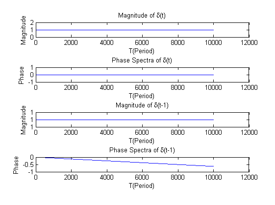
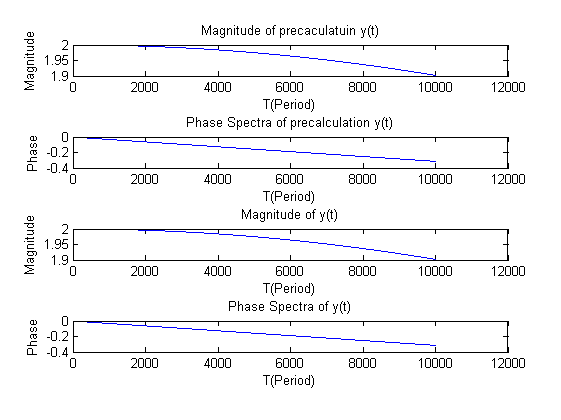
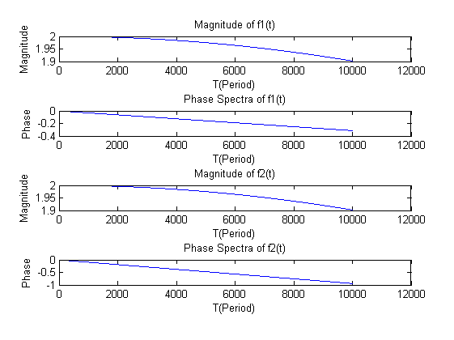

f=[0:0.01:100];
T=1./f;
omega=2*pi*f;
a=computeFT_diracPulse(omega,0);
[magnitude0,phase0]=getMagPhaseSpectra_fromFTVec(a);
b=computeFT_diracPulse(omega,0.001);
[magnitude1,phase1]=getMagPhaseSpectra_fromFTVec(b);
figure
subplot(4,1,1);
plot(magnitude0);
title('Magnitude of \delta(t)')
xlabel('T(Period)')
ylabel('Magnitude')
subplot(4,1,2);
plot(phase0)
title('Phase Spectra of \delta(t)')
xlabel('T(Period)')
ylabel('Phase')
subplot(4,1,3);
plot(magnitude1)
title('Magnitude of \delta(t-1)')
xlabel('T(Period)')
ylabel('Magnitude')
subplot(4,1,4);
plot(phase1)
title('Phase Spectra of \delta(t-1)')
xlabel('T(Period)')
ylabel('Phase')
[ premag, prephase]=getMagPhaseSpectra_precalculated( omega );
c=a+b;
[magnitudec,phasec]=getMagPhaseSpectra_fromFTVec(c);
figure
subplot(4,1,1);
plot(premag);
title('Magnitude of precaculatuin y(t)')
xlabel('T(Period)')
ylabel('Magnitude')
subplot(4,1,2);
plot(prephase)
title('Phase Spectra of precalculation y(t)')
xlabel('T(Period)')
ylabel('Phase')
subplot(4,1,3);
plot(magnitudec)
title('Magnitude of y(t)')
xlabel('T(Period)')
ylabel('Magnitude')
subplot(4,1,4);
plot(phasec)
title('Phase Spectra of y(t)')
xlabel('T(Period)')
ylabel('Phase')
d=computeFT_diracPulse(omega,0.002);
e=b+d;
[magnitudee,phasee]=getMagPhaseSpectra_fromFTVec(e);
figure
subplot(4,1,1);
plot(magnitudec)
title('Magnitude of f1(t)')
xlabel('T(Period)')
ylabel('Magnitude')
subplot(4,1,2);
plot(phasec)
title('Phase Spectra of f1(t)')
xlabel('T(Period)')
ylabel('Phase')
subplot(4,1,3);
plot(magnitudee)
title('Magnitude of f2(t)')
xlabel('T(Period)')
ylabel('Magnitude')
subplot(4,1,4);
plot(phasee)
title('Phase Spectra of f2(t)')
xlabel('T(Period)')
ylabel('Phase')
  